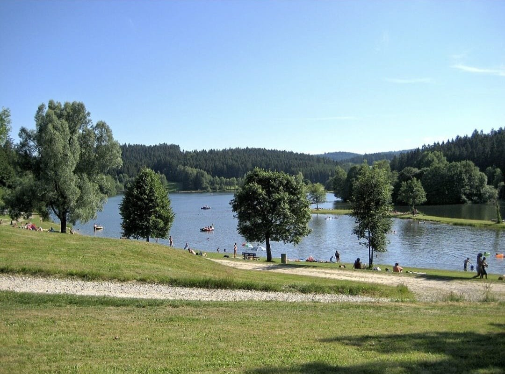

Sommer · BadenRannasee
Nur wenige Fahrminuten entfernt liegt der idyllische Rannasee — perfekt für einen entspannten Sommertag mit der ganzen Familie. Am Sandstrand die Sonne genießen, im Strandkorb entspannen oder direkt ins kühle Nass springen. Stand-up-Paddle und Tretboot laden zum Erkunden ein, ein großer Kinderspielplatz sorgt für Abwechslung und ein Kiosk für die Stärkung zwischendurch.